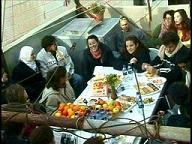
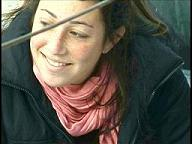
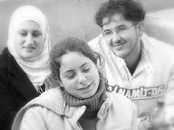

transforming CHECKPOINTS into MEETING-POINTS
| home |
| about |
| work |
| story |
| team |
| schedule |
| links |
| HERE TO MAKE A CHANGE |
Mount of Olives, Jan 2006 On January 24th, 2006, we had a meeting of young Israelis and Palestinians, as well as internationals, at the Home of Hajj Ibrahim on the Mount of Olives. The idea came from Adi, one of a group of 18 year old Israelis who postponed their army service for a year after finishing high school to go and live together in a community and learn about some of the realities of life in this country in order to make a change. Although they come from varied towns and villages, including settlements in the West Bank, for most of them this was the first visit to a Palestinian neighborhood, and obviously to a Palestinian home. At her request, we also invited young Palestinians from East Jerusalem; although this was a busy time, one day before the Palestinian legislative council elections, In’am and her friends Suheila, Fauzi and Rawan, all working together in a children project at the Shu’afat refugee camp, made an effort to come and meet Israelis, not wearing uniform, which is also not common for them. We also had the pleasure of having Ra’ed, a local Hebrew and Arabic teacher and a peace activist, Mohammad, Ibrahim’s Son, Ali, Ibrahim’s ardent nephew, as well as some neighbors who watched and listened from windows all around. Hajj Ibrahim, with the help of some of the residents in his home, who also attended the meeting, namely: Claudia (from Germany), Liz (UK), Judy(Italy), Kevin (France), David (UK), Robin (South Africa) and his little son Jeremiah, prepared a wonderful setting on the roof and balcony, which, with some squeezing, accommodate the crowd of about 70 people with tables laden with colorful fruits, cookies, drinks and delicious knaffe, and welcomed all the guests whole heartedly. Here are some of the visions people shared: “We must, as Jewish, as Palestinians, look for a solution to our problem, because nobody can solve it from the outside, we must look for our peace inside, in ourselves, I think this is the first point, and we can start from this point.” Inam, Silwan, East Jerusalem “My vision is that one of the people in this room, on this roof, will be the Rais [leader] of the Israeli side and I hope that one of the Palestinians in this room will be the Rais of the Palestinians, maybe then the change will come ..” Jonathan, Herzliya, Israel “You should welcome a one state in this country, because you are cousins, you are very similar in your characteristic, originally you had the same sort of culture, and you can live together.” David, UK “I agree with David, Palestine to me is not only the West Bank and Gaza, I believe in a one state solution which includes everybody.” Ra’ed, A-Tour, East Jerusalem “There are no enemies, just two wounded nations .. fantastic to meet you all .. such good hearts” Liz, Glastonbury, UK Some of the Israelis who live in West Jerusalem said they will come back to Ibrahim’s Home in the future, now that they know a place like this exists. Suheila, a Palestinian law student, said she will not forget the faces and the eyes of the Israelis in the meeting, and that in the future, when she will perhaps be in a powerful position, will kindly remember them, as she also hopes that next year, when the Israeli group is going to serve in the army, and perhaps some will be stationed in East Jerusalem, they will also remember her face. For me (Dhyan), hearing the realistic yet hopeful words of these young people gave me great support and inspiration to continue working for a bright future in the Middle East, knowing that, in the words of Khalil Gibran, these are the children of tomorrow, and no smoke will veil their eyes and no jingle of chains will drown out their voices, and although they may be few in number, the difference is as between a grain of wheat and a stack of hay… They are the seed dropped by the hand of God in the field, breaking through its pod and waving its sapling leaves before the face of the sun. It shall grow into a mighty tree, its root in the heart of the earth and its branches high in the sky.. |
DONATE
CONTACT US
|